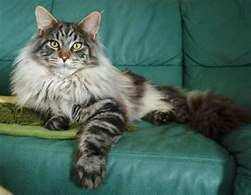

Popular Breeds
There's a cat for everyone among the hundreds of breeds available, each with its own distinct traits and personality. The world of cat breeds is as varied as it is fascinating, ranging from the stately Maine Coon to the curious Sphynx. Each personality and lifestyle can be accommodated by a different breed of cat, whether you're searching for an intrepid explorer or a devoted lap cat. In this section, we'll take a closer look at some of the most popular cat breeds.
Maine Coon
The magnificent Maine Coon cat breed is well-known for its enormous stature, tufted ears, and bushy tail. They are American, coming from the state of Maine. People find them to be quite amiable and social, making them great friends. Maine Coons are known as "gentle giants" because of their big stature and loving demeanor. They are known to build deep links with their human families because of their gentle disposition and adaptability.
Siamese
The distinctive almond-shaped blue eyes and sleek, slender frame of the Siamese cat, accented with color spots on the face, paws, tail, and ears, make them readily recognized. Siamese cats, who originated in Thailand (formerly known as Siam), are renowned for being talkative and gregarious. They are quite intellectual and enjoy social interaction with people. They frequently look for chances to play and engage in cerebral activities. Siamese cats adore participating in all facets of domestic chores and develop close bonds with their human mates.
Persian
Persian cats are the picture of grace and elegance, with their long, flowing coats and characteristically flat features. They are from Persia, which is modern-day Iran, and are well-liked for their peaceful and tranquil nature, which makes them perfect housemates. Persian cats have luscious coats that need to be regularly brushed, but because of their calm demeanor and loving nature, grooming becomes a bonding activity for both the cat and the owner. Persian cats are well known for their penchant for relaxing in opulent settings, and they are adept at transforming any nook or cranny into their own little haven.

Bengals
for its untamed appearance. Its muscular, sleek body is covered in eye-catching spots or marbling that pay homage to its leopard heritage. Bengals are energetic and highly curious cats that come from carefully breeding domestic cats with Asian leopard cats. This interest motivates their playful behaviors. Bengals are highly bright and athletic animals that like cerebral and interactive play. As such, they make wonderful companions for active homes that are prepared to offer a wealth of enrichment opportunities. Bengals are loving and loyal to their human families, even though they have a wild appearance. They build close ties via shared experiences and tender gestures.